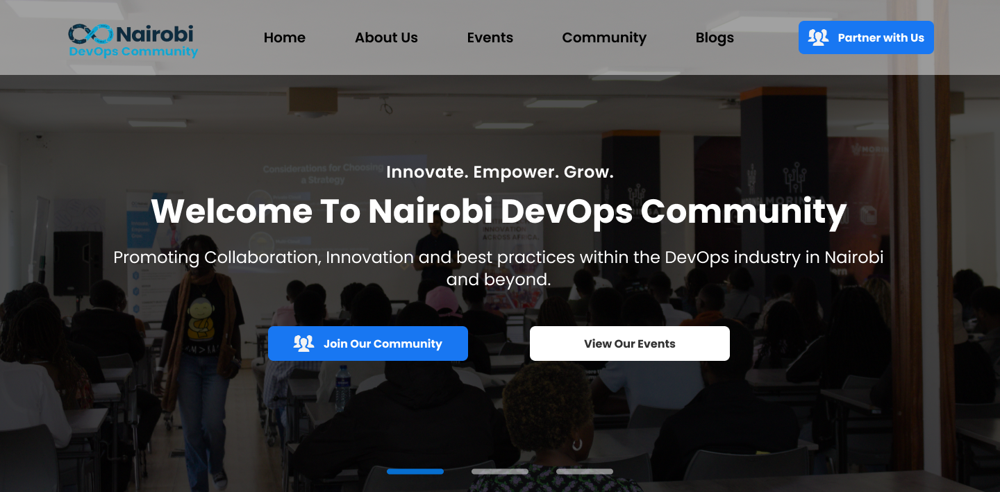

Redesigning the Nairobi DevOps Community website experience to improve navigation, strengthen visual identity, and create a more engaging digital community platform.
Role
Timeline
Tools
Focus
The Nairobi DevOps Community platform needed a refreshed user experience that better represented the community’s identity while improving usability, readability, and engagement. The existing layouts felt visually inconsistent, navigation lacked clarity, and the platform did not fully communicate the energy and professionalism of the DevOps ecosystem.
The redesign focused on modernizing the platform while improving accessibility, structure, and overall user interaction.
Reviewed the existing interface to identify usability gaps, navigation inconsistencies, and layout improvements.
Created cleaner layouts with improved information hierarchy and structured user flows.
Developed modern branded visuals to better reflect the community’s identity and professionalism.
Redesigned the homepage with stronger visual hierarchy, community-focused storytelling, and improved navigation clarity.
Introduced cleaner layouts, modern typography, and more engaging visuals to strengthen the community identity.
This project deepened my understanding of designing for tech communities and event-driven platforms. I learned how branding, layout structure, and navigation design significantly influence engagement and user perception within digital communities.
View additional UI/UX projects, redesign concepts and digital experiences from my portfolio.
Back to Portfolio →